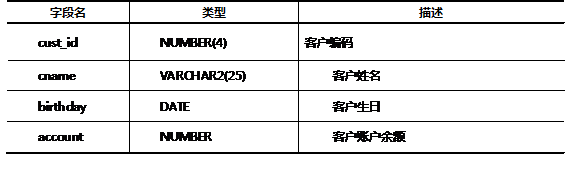

本案例的详细要求如下：
1）职员表emp中有姓名（ename）为smith的员工记录，但不能确定其名字的大小写格式。下列SQL语句中能够查询出名字为smith的员工信息的是：（）。
A．SELECT ename,job,hiredateFROM emp WHERE ename= 'smith';
B．SELECT ename,job,hiredateFROM emp WHERE upper (ename)= 'smith';
C．SELECT ename,job,hiredateFROM emp WHERE ename=upper('smith');
D．SELECT ename,job,hiredateFROM emp WHERE lower(ename)= 'smith';
2）写SQL语句查找员工名字的长度为5个字符的员工信息。
3）查询员工的姓名和工资，按下面的形式显示：
ENAME SALARY
-----------------------------------------------------
SMITH $$$$$$$$$$$$800
ALLEN $$$$$$$$$$$1600
WARD $$$$$$$$$$$1250
实现此案例需要按照如下步骤进行。
步骤一:查询名字为smith的员工信息
职员表中有名字（ename）为smith的员工记录，但不能确定其名字的大小写格式，因此使用lower或upper函数将数据库中的名字信息都转成小写或大写，与“smith”或“SMITH”使用“=”等号进行比较，即可查出该员工的信息，SQL语句如下所示：
- SELECT ename,job,hiredateFROM empWHERE LOWER(ename)= 'smith';
或
- SELECTename,job,hiredateFROMempWHEREUPPER(ename)= 'SMITH';
因此，在此案例中，正确的答案为D。
步骤二：查找员工名字的长度为5个字符的员工信息
要查找员工名字的长度为5个字符的员工信息，可以使用length方法计算员工名字的长度，然后与5使用“=”进行比较，SQL语句如下所示：
- SELECT ename, sal, job FROM emp WHERE LENGTH(ename) = 5;
步骤三：工资列不足15使用“$”左补足15位
使用LPAD方法实现对工资列的左补位，SQL语句如下所示：
- SELECT ename, LPAD(sal, 15, '$') as "SALARY" FROM emp ;
查询各员工的名字ename，并显示出各员工在公司工作的工作天数，用整数表示。提示: 将入职日期与当前日期比较，得到该员工已经工作的天数。显示形式如下：
ENAME HIREDATE WORKTIME
-----------------------------------------------------
SMITH 17-12月-80 12193
ALLEN 20-2月 -81 12128
WARD 22-2月 -81 12126
JONES 02-4月 -81 12087
MARTIN 28-9月 -81 11908
BLAKE 01-5月 -81 12058
实现此案例需要按照如下步骤进行。
步骤一:计算各员工在公司工作的天数
首先，使用当前日期时间SYSDATE减去入职时间列hiredate，然后，在该差值的基础上进行四舍五入来计算员工在公司工作的天数，SQL语句如下所示：
- SELECT ename, hiredate,
- ROUND(SYSDATE-hiredate) as "WORKTIME"
- FROM emp;
本案例的详细要求如下：
1）按照”2009-4-11 20:35:10 ”格式显示系统时间。
2）现需要显示职员的入职时间格式为“17 of November 2004”，下列SQL语句正确的是（）。
A．
- SELECT hiredate('fmDD "of" MONTH YYYY') "Date Hired" FROM emp;
B．
- SELECT hiredate('DD "of" MONTH YYYY') "Date Hired" FROM emp;
C．
- SELECT TO_CHAR (hiredate,'DDspth of MONTH YYYY') "Date Hired"
- FROM emp;
D．
- SELECT TO_CHAR(hiredate,'fmDD "of" MONTH YYYY') "Date Hired"
- FROM emp;
3）构造SQL语句，产生类似于下面形式的结果：
ENAME HIREDATE REVIEW
--------------------------------------------------------------------
SMITH 1980-12-17 1980年12月17日
即hiredate列显示的格式为“1980-12-17”；再将hiredate列以“1980年12月17日”格式显示，并且显示的列名为“REVIEW”。
步骤一：按格式显示系统时间
使用SYSDATE表示返回当前的系统时间，精确到秒；使用“YYYY”表示4位数字的年份；使用MM表示2位数字的月份；使用DD表示2位数字的天；使用HH24表示24小时制的小时；使用MI表示分钟；使用SS表示秒。SQL语句如下所示：
- SELECT TO_CHAR(SYSDATE, 'yyyy-mm-dd hh24:mi:ss' ) FROM DUAL;
步骤二：按格式显示员工的入职时间
显示职员的入职时间格式为“17 of November 2004”，按Oracle的日期格式如下：
- 'fmDD "of" MONTH YYYY'
其中，fm表示格式；DD表示2位数字的天；“of”即为显示字符串“of”；MONTH表示全拼的月份；YYYY表示4位数字的年份。
然后，使用to_char函数，将日期类型的表示的时间，按格式转换为字符类型的时间，SQL语句如下所示：
- SELECT TO_CHAR(hiredate,'fmDD "of" MONTH YYYY') "Date Hired"
- FROM emp;
上述SQL语句中，"Date Hired"是“TO_CHAR(hiredate,'fmDD "of" MONTH YYYY')”的别名，在SQL中将别名加上双引号，可以区分别名中字符的大小写。不加双引号别名默认显示为大写。
因此，本案例中D选项正确。
步骤三：按格式显示员工的入职时间
使用to_char函数配合Oracle日期格式将hiredate列显示的格式为“1980-12-17”，并且将hiredate列以“1980年12月17日”格式显示，并且显示的列名为“REVIEW”，SQL语句如下所示：
- SELECT ename, TO_CHAR(hiredate, 'yyyy-mm-dd') as "HIREDATE",
- TO_CHAR(hiredate, 'yyyy"年"mm"月"dd') as "REVIEW"
- FROM emp;
查询一个订单，从下单开始到启运需要多长时间，以月为单位（例如：3个月，6个月），写出正确的查询语句。假设订单表名为ord，其中订单编码、下单时间、启运时间的列名分别为：custid、orderdate、shipdate。
使用MONTHS_BETWEEN计算下单时间（orderdate）与启运时间（shipdate）这两个日期值之间间隔的月份数，然后，将该间隔的月份数使用ROUND方法进行四舍五入，SQL语句如下所示：
- SELECT custid, orderdate, shipdate,
- ROUND(MONTHS_BETWEEN(shipdate, orderdate)) as "Time Taken" FROM ord;
本案例可按如下SQL语句进行测试。
创建ord表的SQL语句如下所示：
- CREATE TABLE ord(
- custid NUMBER(4),
- orderdate DATE,
- shipdate DATE
- );
向ord表中插入测试数据的SQL语句如下所示：
- INSERT INTO ord(custid,orderdate,shipdate)values(1001,'12-4月-98','10-8月-98');
- INSERT INTO ord(custid,orderdate,shipdate)values(1002,'12-3月-98','10-6月-98');
- INSERT INTO ord(custid,orderdate,shipdate)values(1003,'12-2月-98','10-9月-98');
查询一个订单，从下单开始到启运需要多长时间，SQL语句如下所示：
- SELECT custid, orderdate, shipdate,
- ROUND(MONTHS_BETWEEN(shipdate, orderdate)) as "Time Taken" FROM ord;
现有数据表Customer，其结构如表-1所示：
表-1 customer表结构
1)构造SQL语句，列出Customer数据表中每个客户的信息。如果客户生日未提供，则该列值显示“not available”；如果没有余额信息，则显示“no account”。
2) 构造SQL语句，列出生日在1987年的客户的全部信息。
步骤一：列出Customer数据表中每个客户的信息
使用TO_CHAR函数将日期类型的birthday列的数据转换为字符类型，然后，使用NVL函数，当birthday为NULL值时，将birthday列的数据显示为“not available”。同理，使用TO_CHAR函数将数值类型的account列数据转换为字符类型，然后，使用NVL函数，当account为NULL值时，将account列的数据显示为“noaccount”，SQL语句如下所示：
- SELECT cust_id, cname, NVL(TO_CHAR(birthday, 'yyyy-mm-dd'), 'not available'),
- NVL(TO_CHAR(account), 'no account')
- FROM customer;
上述SQL语句中，使用TO_CHAR函数将日期类型的数据、数值类型的数据转换为字符类型，这是因为，NVL函数要求两个参数的数据类型必须保持一致。
步骤二：列出生日在1987年的客户的全部信息
使用TO_CHAR函数将获取birthday列的年份数据，与“1987”使用“=”等号进行比较，SQL语句如下所示：
- SELECT * FROM customer
- WHERE TO_CHAR(birthday, 'yyyy') = '1987';
本案例可按如下SQL语句进行测试。
创建customer表的SQL语句如下所示：
- create table customer(
- cust_id NUMBER(4) Primary Key,
- cname VARCHAR2(25) Not Null,
- birthday DATE,
- account NUMBER
- );
向customer插入如下测试数据，SQL语句如下所示：
- INSERT INTO customer(cust_id,cname,birthday,account)values(1001,'郭靖','12-12月-13',200);
- INSERT INTO customer(cust_id,cname)values(1002,'黄蓉');
- INSERT INTO customer(cust_id,cname,birthday,account)values(1003,'梅超风','12-12月-87',200);
列出Customer数据表中每个客户的信息的SQL语句如下：
- SELECT cust_id, cname,
- NVL(TO_CHAR(birthday, 'yyyy-mm-dd'), 'not available'), NVL(TO_CHAR(account), 'no account')
- FROM customer;
列出生日在1987年的客户的全部信息的SQL语句如下：
- SELECT * FROM customer
- WHERE TO_CHAR(birthday, 'yyyy') = '1987';